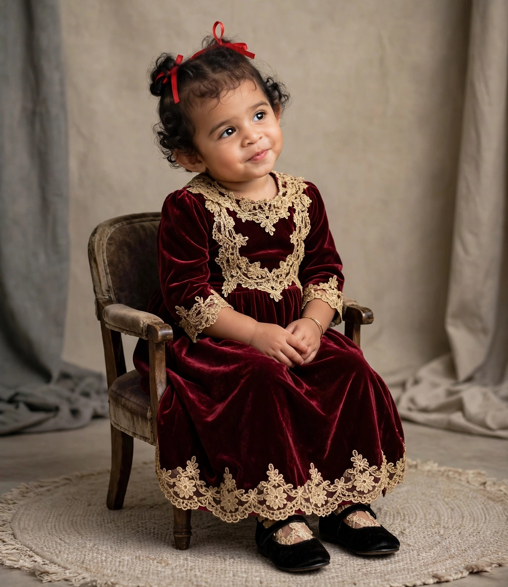

Hereun Sintikhe Balubun
Keluarga Besar Balubun-Kwando
Kiranya rahmat permandian kudus menuntun Hereun bertumbuh dalam iman, hikmat, dan kasih Kristus, menjadi putri pembawa terang serta sukacita bagi keluarga dan sesama.